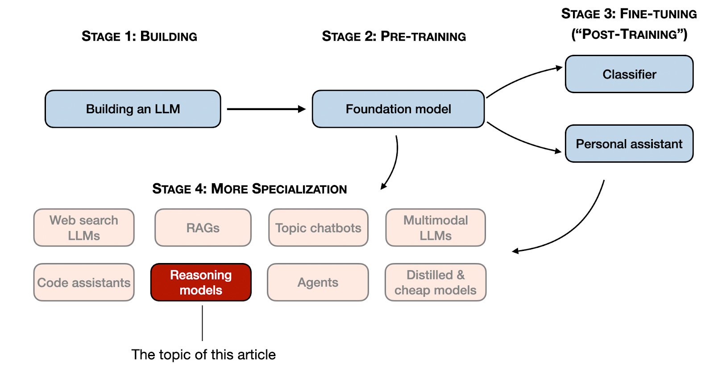
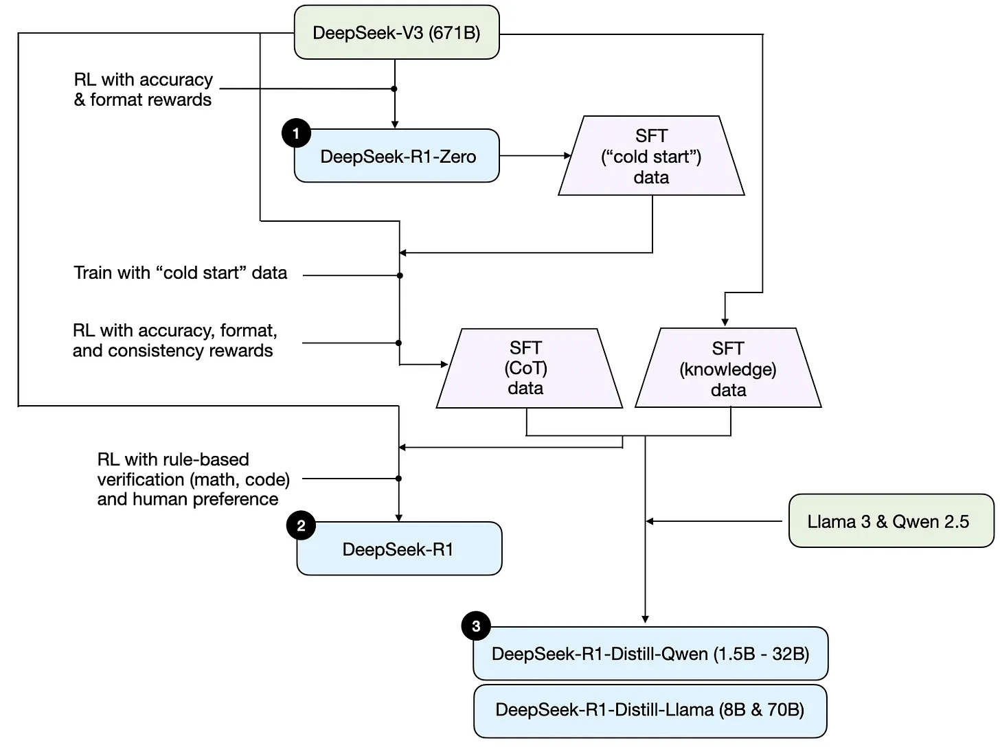
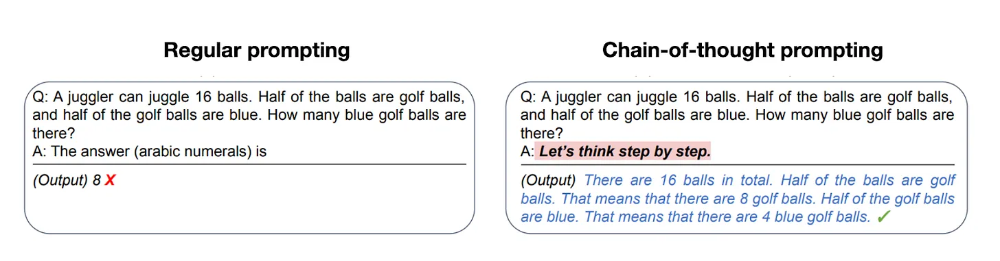
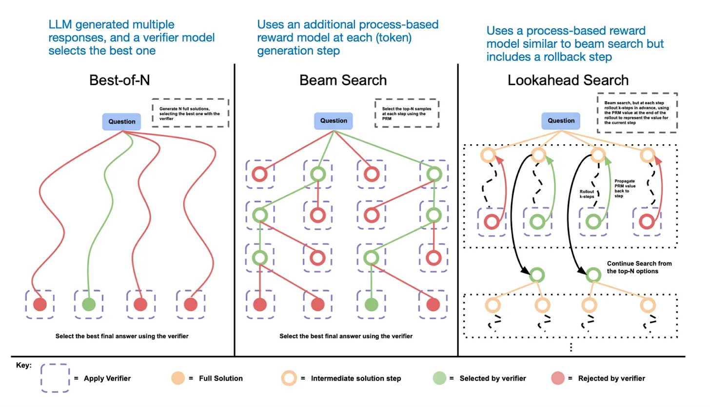
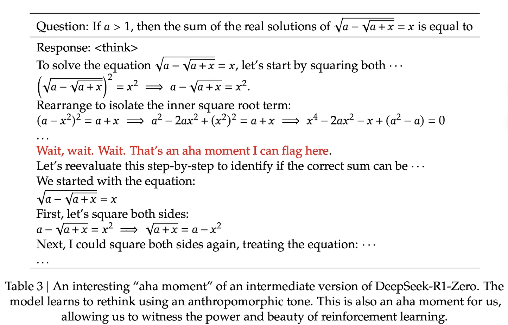

ReasoningLLMs笔记
参考博客
#CoT
主要内容：构建推理模型的四种主要方法

来自网络
- 推理模型是什么
- 推理模型的优缺点
- Deepseek（后简称DS） R1的方法论
- 改进推理模型的四种主要方法
- DS V3和R1发布后LLM的领域的看法
- 预算有限开发推理模型的建议
如何定义“推理模型”
通常定义： 复杂推理任务中表现出色的LLMs。
推理任务：
- 解密
- 脑筋急转弯
- 数学证明
特点： - 包含显式的“思考”过程
什么时候使用推理模型？
非必要使用的场景：
- 翻译
- 简单知识问答
- 总结
| 擅长（Good at） | 不擅长（Bad at） |
|---|---|
| 演绎或归纳推理（如：谜题、数学证明） | 快速且低成本的响应（推理时间更长） |
| 链式思维推理（将多步骤问题拆解） | 基于知识的任务（容易产生幻觉） |
| 复杂决策类任务 | 简单任务（容易“过度思考”） |
| 对新问题具有更好的泛化能力 | — |
DS的训练流程

1） DeepSeek-R1-Zero： 该模型基于 2024 年 12 月发布的 671B 预训练 DeepSeek-V3 基础模型。研究团队通过强化学习（RL）和两种奖励方式进行训练。这种方法被称为“冷启动”训练，因为它没有包含监督微调（SFT）步骤，而这通常是人类反馈强化学习（RLHF）的一部分。
Chain-of-Thought 是“被奖励逼出来的”，不是教出来的
（2）DeepSeek-R1： 这是 DeepSeek 的旗舰推理模型，建立在 DeepSeek-R1-Zero 基础之上。团队通过增加 SFT 阶段和进一步的 RL 训练进一步完善，改进了“冷启动”R1-Zero 模型。
（3） DeepSeek-R1-Distill： 利用前几步产生的 SFT 数据，DeepSeek 团队对 Qwen 和 Llama 模型进行了微调，以增强其推理能力。虽然这不完全是传统意义上的知识蒸馏（logits 层面的学习），但本质上是在较大模型（DeepSeek-R1 671B）的输出上训练较小模型（Llama 8B 和 Qwen 1.5B–30B）。
| 维度 | 常规 LLM | DeepSeek-R1 |
|---|---|---|
| CoT 来源 | 人工示范 | RL 自发涌现 |
| 训练核心 | SFT + RLHF | RL 驱动 |
| 奖励信号 | 人类偏好 | 可验证正确性 |
| 推理风格 | 模仿人类 | 搜索式推理 |
| 可解释性 | 中等 | 强（但冗余） |
4、种主要的构建和改进推理模型的方法
1）推理时间尺度
经典方法：
-
chain-of-thought (CoT) prompting #CoT
- 输入词中包含一步一步思考的短语，鼓励模型和生成中间步骤
- 不总是正确
- 通常在复杂问题上 更准确

- 输入词中包含一步一步思考的短语，鼓励模型和生成中间步骤
-
投票和搜索策略
- 大模型生成多个答案，用多数投票的方式获得正确答案
- 或者使用束搜索（Beam Search）等其他搜索算法来生成更好的响应
- Beam search
- 在 token-level 搜索：
•维护一个大小为 k 的候选序列集合（beam）
•每一步：
• 对每个 beam 展开 top-k token
• 保留总体概率最高的 k 条路径-
- 在 token-level 搜索：
- Beam search
Scaling LLM Test-Time Compute Optimally can be More Effective than Scaling Model Parameters
介绍更多细节

The DeepSeek R1 technical report categorizes common inference-time scaling methods (such as Process Reward Model-based and Monte Carlo Tree Search-based approaches) under “unsuccessful attempts.” This suggests that DeepSeek did not explicitly use these techniques beyond the R1 model’s natural tendency to generate longer responses, which serves as an implicit form of inference-time scaling compared to the V3 base model.
2）纯强化学习（RL）
这是DS R1的亮点，他们在训练R1-Zero时，没有初始SFT，完全采用了RL。
通常类似于RLHF这些RL方法，用在的偏好调优阶段。
DS组使用了两种奖励策略：准确性和格式
- 准确率奖励：使用力扣编译器验证答案，使用确定性系统评估数学答案
- 格式奖励：LLM评价答案是否符合预期格式，例如在
<think>标签中放入推理步骤
令人惊讶的是，这种方法足以让 LLM 培养出基本的推理能力。研究人员观察到一个“啊哈！”时刻，模型开始在反应中生成推理痕迹，尽管模型并未被明确训练，如下图所示。

DS 是第一个演示纯强化学习可以让模型生成推理步骤的
3）监督式微调与强化学习（SFT + RL）
#SFT #RL
再DS-R1-ZERO的基础上，额外加入SFT+RL来强化推理性能
GPT-o1可能采用类似方式进行开发。
常见操作：SFT→RL（如RLHF）。

- cold-start（冷启动）：用R1-Zero生成了冷启动SFT数据。zero没有进行任何SFT的训练
- 利用生成的SFT数据，进行指令微调训练模型，进入RL阶段
- 保留R1-Zero同样的两个奖励（准确性、格式）
- 追加一系列奖励
- 防止语言混合
- 进行第二轮SFT数据收集
- 最新的模型权重用于生成六十万条CoT示例
- 使用最基础的V3创建另外二十万条基于知识的SFT示例
- 600k+200k SFT用于V3的微调
- 进行最后一轮RL
- 使用基于规则（rule-based methods）的方法奖励数学和编程题目的准确性，其他题用人类偏好标签
4）纯监督微调（SFT）与蒸馏
- 传统蒸馏：一个小模型（Student Model）在教师模型输出的 logits 分布和目标标签数据上进行学习。
- LLM下的蒸馏：由更大的LLM生成的SFT数据集上，对小的LLM进行指令微调。

目的：
- 低成本运行
- 有趣：纯SFT没有RL能做到什么效果
结果：比R1弱，但是比R1-zero强很多，而且模型小好几个数量级。
有趣的实验：测试蒸馏用于更小的模型Qwen-32B
结果：蒸馏对较小模型的效果远高于纯强化学习
分析：这与单靠强化学习不足以在该规模模型中诱导强推理能力的观点相符，而在处理小模型时，基于高质量推理数据的 SFT 可能是更有效的策略。
总结
| 编号 | 方法 / 观点 | 核心结论 | 优点 | 局限性 | 代表模型 / 推测 |
|---|---|---|---|---|---|
| 1 | Inference-time scaling | 无需额外训练即可显著提升强模型性能 | 立竿见影、对强模型几乎是“必选项” | 推理成本高，难以大规模部署 | 推测 o1 使用；DeepSeek-R1 使用较少 |
| 2 | Pure RL | 有助于研究推理作为“涌现行为”的本质 | 理论研究价值高 | 实际效果不稳定，小模型难以复现 | DeepSeek-R1-Zero（研究导向） |
| 3 | RL + SFT | 构建高性能推理模型的关键路径 | 稳定、可控、效果最好 | 依赖高质量 SFT 数据 | DeepSeek-R1（方法蓝图）；推测 o1 |
| 4 | Distillation | 构建小模型、低成本推理的有效方式 | 高效、实用、易部署 | 无法推动新一代推理能力产生 | R1-Distill-Qwen-32B |
| 5 | RL + SFT + Inference-time scaling | 下一阶段最有前景的组合方案 | 兼顾性能上限与推理能力 | 成本高、系统复杂 | 高度疑似 OpenAI o1 |
补充
来自评论区：
The paper also includes some insights on how to prompt reasoning models:
论文还包含了一些关于如何提示推理模型的见解：
(1) Zero-shot outperforms few-shot - Their extensive testing revealed that few-shot prompting consistently degrades model performance, contrary to traditional LLM best practices.
（1）零样本优于少数样本——他们的广泛测试显示，少样本提示持续降低模型性能，这与传统大型语言模型的最佳实践相矛盾。
(2) Direct problem description wins - The model performs best when users simply state the problem and specify the output format, avoiding complex prompting patterns.
（2）直接问题描述获胜——当用户简单陈述问题并指定输出格式时，模型表现最佳，避免复杂的提示模式。
(3) Language consistency matters - Using the same language throughout the prompt is crucial, as the model can mix languages in reasoning chains when prompts contain multiple languages.
（3） 语言一致性很重要——在整个提示中使用同一语言至关重要，因为当提示包含多种语言时，模型可以在推理链中混合语言。
ReasoningLLMs笔记